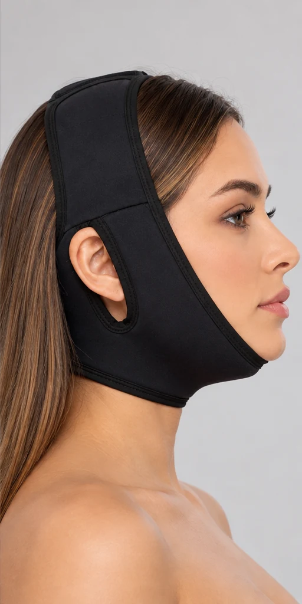
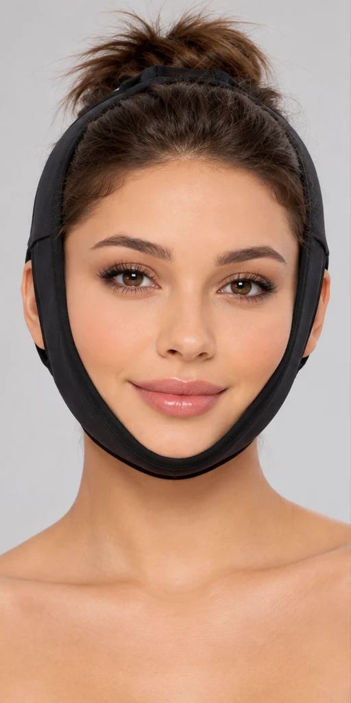

Lifting facial
Apoio à região da face e do queixo quando indicado no seu plano de cuidados.
Conversar sobre lifting ↗FAIXA FACIAL PÓS-OPERATÓRIA
Mais conforto para a sua recuperação.
Mais cuidado em cada detalhe.
Uma faixa que envolve com suavidade e oferece apoio ao queixo e pescoço no seu pós-operatório, conforme a orientação do seu cirurgião.
Quero minha faixa ↗
01 / CUIDADO EM CADA DETALHE01 — PARA O SEU MOMENTO
Cada recuperação é única.A faixa pode ser indicada pelo seu cirurgião após procedimentos na face e no pescoço. A indicação e o ajuste são sempre individuais.
Apoio à região da face e do queixo quando indicado no seu plano de cuidados.
Conversar sobre lifting ↗Envolvimento do queixo e pescoço, com uso definido pelo profissional que acompanha você.
Conversar sobre lipo de papada ↗Uma peça de apoio para os cuidados após a cirurgia do pescoço, mediante orientação.
Conversar sobre cervicoplastia ↗02 — CONFORTO NOS DETALHES
O essencial, bem pensado.Fecho em velcro no topo para adaptar o encaixe, conforme a orientação recebida.
Aberturas laterais para acomodar as orelhas e facilitar o posicionamento.

Ajuste em velcro ──── Abertura lateralTecido macio e elástico para envolver a região do queixo e pescoço.
Encaixe envolvente para auxiliar no cuidado. A compressão adequada deve ser conferida pelo cirurgião.
03 — UM OLHAR MAIS DE PERTO
O encaixe envolve o queixo. As aberturas laterais acomodam as orelhas.
Explore os ângulos acima ou continue rolando ↓
04 — SUA ROTINA DE CUIDADO
Acomode a faixa sob o queixo, alinhando as aberturas com as orelhas.
Feche o velcro no topo da cabeça seguindo o ajuste orientado pelo cirurgião.
Observe o encaixe. Em caso de dor, pressão excessiva ou irritação, procure a equipe responsável.
Seu cirurgião define quando começar, as horas de uso e as pausas necessárias.
05 — O ENCAIXE IMPORTA
O tamanho certo faz parte do cuidado. Nossa equipe pode ajudar você a conferir a tabela antes de comprar.
Quero ajuda para escolher ↗| Tamanho | Medida indicada* |
|---|---|
| P Pequeno | A confirmar |
| M Médio | A confirmar |
| G Grande | A confirmar |
* Guia em atualização. Antes de medir, confirme com a equipe os pontos de referência e a tabela oficial do fabricante. Não escolha um tamanho menor para aumentar a compressão.
06 — HISTÓRIAS DE CUIDADO
Cada recuperação tem sua própria história.
Espaço reservado para depoimento real, com autorização da cliente.
01 / 03FOTOS DE CLIENTES
Em breve, histórias compartilhadas com autorização.Avaliação média e número de clientes: aguardando dados verificados.
07 — ESCOLHA SEU CUIDADO
Uma peça essencial. Duas formas de escolher.Uma faixa facial preta, com ajuste em velcro e abertura para as orelhas.
Duas faixas para alternar entre o uso e a higienização, conforme orientação.
08 — PODE PERGUNTAR
Se a sua dúvida não estiver aqui, nossa equipe ajuda com os detalhes do produto.
Falar no WhatsApp ↗O início, a duração diária e o período total de uso são definidos pelo seu cirurgião. Siga o plano individual de cuidados e confirme com ele qualquer mudança.
Consulte as instruções de higienização da etiqueta e do fabricante antes de lavar. Nossa equipe pode ajudar a confirmar os cuidados específicos deste modelo.
Confirme a tabela oficial e a forma de medir com nossa equipe. O tamanho e o ajuste devem ser compatíveis com a orientação do seu cirurgião.
O frete e o prazo dependem do CEP e da disponibilidade. Consulte a equipe antes de concluir o pedido para receber a estimativa atualizada.
Solicite a política vigente antes da compra. A equipe informará os procedimentos, os prazos aplicáveis e o canal para solicitar atendimento, respeitando seus direitos de consumidora.
O uso durante o sono precisa ser autorizado pelo cirurgião. Não altere os períodos de uso por conta própria.
SEU PRÓXIMO CUIDADO COMEÇA AQUI
Escolha sua faixa com atenção, tire suas dúvidas
e prepare cada detalhe do seu pós-operatório.
Produto de apoio ao pós-operatório. Use conforme orientação do seu cirurgião.
Não substitui acompanhamento médico.